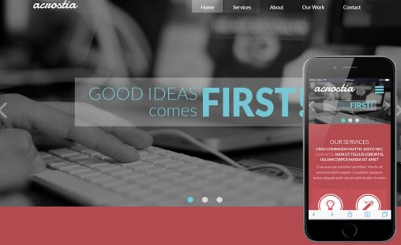
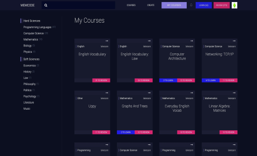

Jan, 2020 - Mar, 2020
An Automatic fish feeder and Monitoring system which automatically feed the fish at the set time and date and to Monitoring and giving the amount of oxygen to fish tank if needed .The system should monitor the status of fish and the amount of the food has been dispersed.To enable fish owner to customize feeding pre-set timing.


PROBLEM
In conference halls or during presentation, we manually switch on/off lights. How can we make it automated ?
SOLUTION
LDR sensor detect presence of light energy from projector and generate values.When projector light is on, relay is triggered by arduino and consequently lights are off.
PROBLEM Falls of the elderly always lead to serious injury. Not only eldery people even drunken people, kids, People who are suffering from medical issues like stroke and heartattack are facing a problem in fall.
SOLUTION Multiple piezoelectric plate will generate electric pulse. Arduino will trigger GSM module to make an emergency call.
August, 2020 - August, 2020

Team of 2 we used Collaborative working to developed a responsive webpage. Implemented a frontend framework(Bootstrap) in our project
March, 2020 - April, 2020

MEMCODE is Created by lakesare. I Contributed to this project. I solved an issue, which is Enabling sound button in stimulated page.